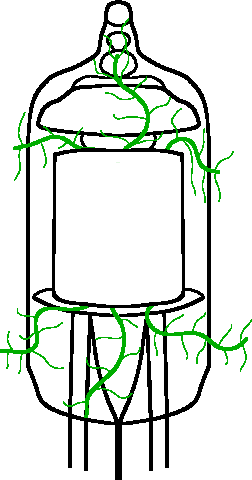

Introdução
Esse site o meu cantinho de guarda coisas que eu acho interessante. Eu sempre quis criar um blog mas agora eu consegui configurar direito o suficiente para fica deboa para eu escrever sem problemas :)

Esse site o meu cantinho de guarda coisas que eu acho interessante. Eu sempre quis criar um blog mas agora eu consegui configurar direito o suficiente para fica deboa para eu escrever sem problemas :)
Aqui é a parte mais maluca, onde eu faço tudo que eu acho legal e divertido.
| Nome | Descrição |
|---|---|
Este site |
Meu pequeno cantinho... |
| Padronizações traduzidas para pt-BR | |
WIP |
depois eu coloco o resto. |
| Aqueles que estiverem aqui e não parecerem ativos, é por que eu sou louco mesmo | |
| Nome | Descrição |
|---|---|
WIP |
A tem muitos, depois eu coloco tambem xD |
| Não quer dizer que eles não vão voltar, só estão "dormindo" | |
Por tras de tudo, aprendemos com nossos erros e acertos.
Aqui fica tudo, é praticamente meu banco de dados, explore ai!
Eu sou Andrews(mais conhecido como lostopkk) tenho 22 anos e gosto de criar projetos que na maioria das vezes abandono mas sempre volto.